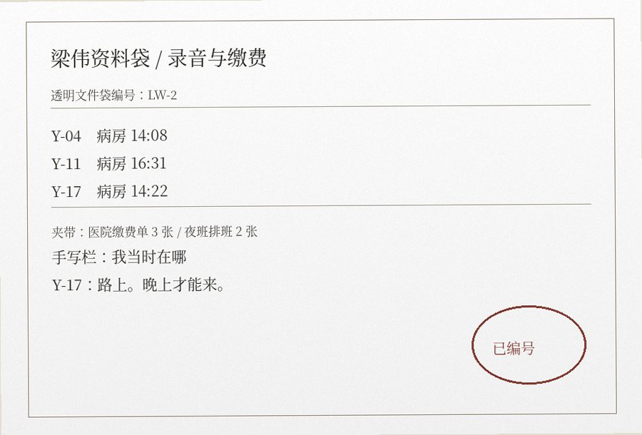

正在阅览：归席见证 / 第12辑 / 2 of 2 返回卷目
梁伟，34岁。女儿约6岁时去世。女儿最后一年长期住院。梁伟白天工作，晚上另做兼职。他把留下的生活音频按日期和编号整理。

标记三处能直接说明“他当时不在”的材料
不判断声音是否异常，只看录音转写与他后来补写的所在位置。
录音目录说明
梁伟最初整理了四十多段音频，后来删去重复文件，只保留二十三段。编号按他当时找到文件的先后编排。Y-04是病房午后，录音里能听见走廊有人经过；Y-11在换药后录下，药袋与床边物件的声音没有被剪掉；Y-17开头几秒是病房空调和塑料袋，随后才有人说话。
他在每一段后面写“我当时在哪”。很多答案都很短：上班、送货、夜班、在路上。Y-17旁边原本只写“她想吃葡萄”，半年后他又补了一句“有人说你爸晚上才能来”。
家属曾劝他不要再听。他反问：“我现在才知道那年她每天说了什么，为什么又让我停？”这句话后来被组织引用到还耳讲义里，但引用时删掉了“我现在才知道”几个字。
编号旁的本人备注
| 编号 | 当日去向 | 本人后补 |
|---|---|---|
| Y-05 | 白班延时 | 18:40到病房，她已经吃完。 |
| Y-09 | 送货 | 录音里电视一直开着，我没在。 |
| Y-12 | 楼下接工作电话 | 护士问家属在哪，过了两分钟我才上楼。 |
| Y-16 | 夜班前补觉 | 她问过一次几点来。 |
| Y-18 | 缴费 | 这段没有她说话，只有推车。 |
公开见证稿将这些条目归在“声音保存”下；梁伟本人使用的列名始终是“我当时在哪”。
同卷附页 · 排班、票据与未选录音目录（5组）
资料夹杂项
梁伟的音频文件旁边混着不少与女儿无关的东西：夜班排班表、停车费小票、医院缴费单、送货地址、两张没报销的出租车票。他没有另外整理，全部塞在同一只透明文件袋里。
Y-11的文件名原本只是手机自动生成的一串数字。梁伟后来按找到顺序重命名；“Y”是女儿名字的首字母，不代表年份，原卷也没有另设等级。
他最早的转写只记女儿说了什么，几个月后才开始补环境和自己所在位置。补写时有一栏反复出现同一个词：“路上”。
未选入公开稿的录音目录
| 编号 | 内容 | 梁伟后来补写 |
|---|---|---|
| Y-02 | 病房电视在播天气预报，孩子问“明天还下雨吗”。 | 我在停车场找位子，晚了十二分钟。 |
| Y-07 | 护士换吊瓶，孩子说手背痒。 | 公司盘点。电话静音。 |
| Y-10 | 塑料饭盒打开的声音，问“爸爸吃了吗”。 | 送城西两单。 |
| Y-14 | 只有走廊脚步和很远的电视声。 | 夜班前在出租屋睡觉。 |
| Y-20 | 孩子说同床小朋友今天出院。 | 缴费窗口排队，后来去买水果。 |
他在这些条目旁边没有写“后悔”或“想念”。最多的是时间：几点下班、几点到医院、错过了哪一段。透明文件袋里还夹着一张加班补贴单，四十元那一栏被圆珠笔划了两次。
三月第二周 · 排班与缴费
| 日期 | 白天 | 晚上 | 医院纸张 |
|---|---|---|---|
| 03-12 | 仓库盘点，17:20下班 | 送城北两单 | 18:46停车票 |
| 03-13 | 正常班 | 未接加单 | 缴费窗口小票 19:08 |
| 03-14 | 白班延时 | 无 | 药费单 186.40 |
| 03-15 | 城东送货 | 补送一单 | 水果店小票：葡萄 1.2kg |
| 03-16 | 休 | 22:00夜班 | 无 |
| 03-17 | 正常班 | 主管问能否加单，未回复 | 出租车票 21:37 |
这些纸没有装订顺序。排班表折在缴费单里面，水果店小票背面写着“不要买有籽的”。Y-17那张便签则夹在最外层，圆珠笔把“路上”两个字描了两遍。
一周往返记录
| 日期 | 白天 | 晚上 | 梁伟后补 |
|---|---|---|---|
| 周一 | 仓库理货，18:10下班 | 医院19:02到 | 她已经吃完晚饭，桌上有半盒葡萄。 |
| 周二 | 城南送货三单 | 兼职取消 | 本来想早去，路上堵车。护士说她下午睡得多。 |
| 周三 | 白班延时 | 20:16到病房 | 她不理我。后来问我要不要看她画的葡萄。 |
| 周四 | 缴住院费、回公司 | 夜班 | 没有去。电话里她问第二天几点来。 |
| 周五 | 仓库盘点 | 18:47到医院 | 买错了有籽的葡萄，她挑了两个就不吃。 |
排班表背面还记着三笔很小的数：停车六元、粥四元、出租车二十三元。最下面一行写“周日休，上午去”。周日那格后来被另一张临时送货单盖住，只能看见“加四十”。
这些纸没有被收入公开见证稿，原卷里与Y系列录音编号夹在一起。
医院之外的电话
梁伟保留过一页手机通话清单。最密集的是工作号码和医院座机，真正和女儿直接通话的次数并不多。很多时候电话接起来，是护士、孩子奶奶或病房里别的家属。
这些记录里没有一条写“为了医药费”。只有后来几张工资单能看出，他在那一年多接了多少夜班和零散送货。公开见证稿曾把这段概括为“父爱守候”，梁伟在纸边写了三个字：“别这么写。”